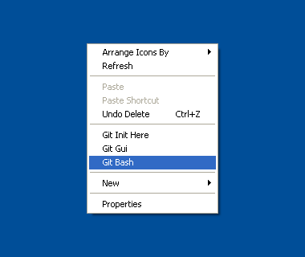
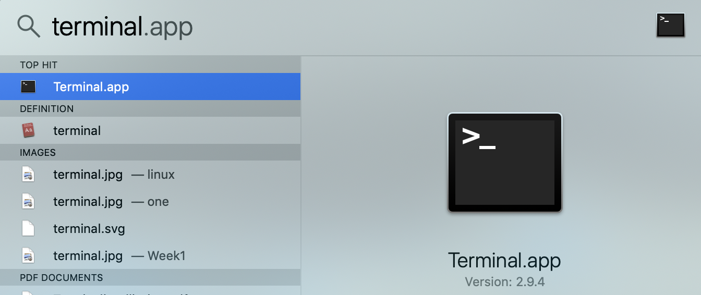

October 7, 2019
1. What is Git and Why do I need it?
Git is a version control system. Don’t let that make you feel like you are a software engineer. You don’t have to be one for it to be useful to you. In the simplest terms, git keeps a journal of all the changes you will make to any files and folders (create, edit, copy, move, delete etc.) in a given project. Think of it as a virtual assistant that is always listening and keeping track of what you do.
GitHub as you probably already figured out, is an online resource that allows people to host and archive their code. The code can be updated/maintained from multiple computers that you may have access to. You may keep it all to yourself, share it with collaborators or if its useful enough, share it with the community at large. Code is divided into repositories on GitHub and you may have one or a hundred each dedicated to a different project you are working on. Consider that you are teaching a course for which you may host the weekly materials such as presentations, assignments and exam solutions to a GitHub repository and then share the repo with your students.
As you can see, one doesn’t really need to be a software programmer for Git and GitHub to be useful to them. With this introduction, we are barely scratching the surface. In the Further Reading section below, you will find additional resources to learn about these tools. For now, we will set up your environment so it’s usable today.
Note For Windows Users: Please install git from https://gitforwindows.org
Open the commandline terminal on your system. For Windows, right click and choose Git Bash. For Mac, search for terminal in the spotlight search.
 
INSERT IMAGE: git-bash.png (width 300) INSERT IMAGE: terminal.png (width=400)
Check whether git is working on your system:
git –version
git version 2.20.1 (Apple Git-117)
To check git’s documentation i.e. help manual
man git
INSERT IMAGE: githelp.png width 750
To exit the interactive documentation
q
Check the Status of the current directory where your prompt is located:
git status
fatal: not a git repository (or any of the parent directories): .git
You haven’t created any git repositories yet on your system, so this warning message is to be expected.
Let’s create a new repository for testing purposes. First, check where you are on the system, then create a new folder named gitproject.
pwd
/Users/wyoibc
mkdir gitproject
cd gitproject
pwd
/Users/wyoibc/gitproject
Initiate a new repository
git init
Initialized empty Git repository in /Users/wyoibc/gitproject/.git/
Check the status again
git status
On branch master
No commits yet
nothing to commit (create/copy files and use “git add” to track)
This is normal as well since we haven’t yet created any content in here. Now let’s go ahead and create a new file.
touch README.md
vim README.md
This is a new repository.
Save the changes and exit
:wq
git status
On branch master
No commits yet
Untracked files: (use “git add
README.mdnothing added to commit but untracked files present (use “git add” to track)
As you can see, Git is now aware of the changes you made to this repository. It knows that there is a new file, although the file is not yet on Git’s roll call. This is by design. Often times, you don’t want every file/folder to be tracked by git. So git only tracks changes in files when you ask it to. Let’s go ahead and do that.
git add README.md
git status
On branch master
No commits yet
Changes to be committed: (use “git rm –cached
new file: README.mdThe next logical step here is to commit this file to git and then push the contents of the repository to your GitHub account. But before we get there, we need to do a couple of preparations: